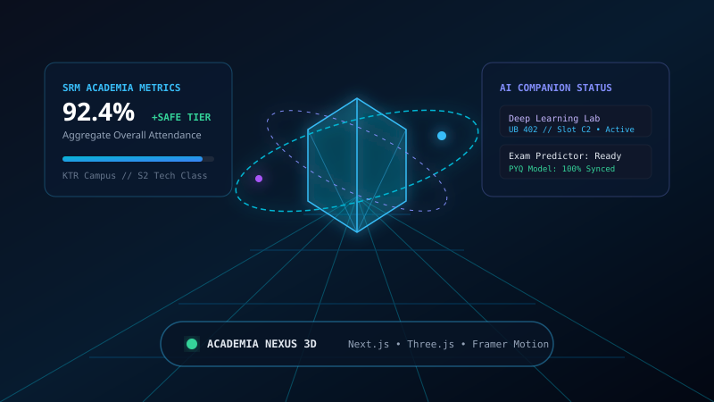
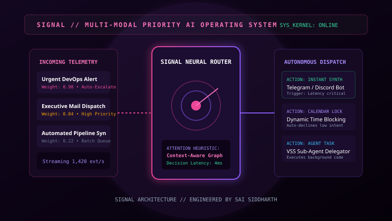
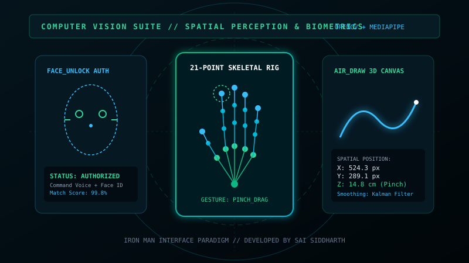
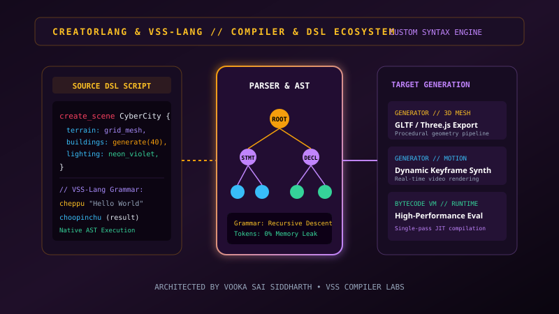

FLAGSHIP ARCHITECTURES
Production systems, native neural models, and spatial suites designed and engineered from first principles.
VSS — Self-Deciding Agent
A System-One decision intelligence model engineered from scratch in PyTorch — not an LLM wrapper. Takes an arbitrary state (text or JSON) plus typed query specifications and answers all questions simultaneously in a single forward pass, producing calibrated probability distributions and schema-guaranteed outputs in under 15ms.
from vss import VSS
model = VSS.from_pretrained("runs/prototype/final")
result = model.decide(
state={"message": "Card charged twice.", "customer_age_days": 421},
questions=[
{"id": "department", "type": "choice", "options": ["billing", "tech"]},
{"id": "refund_req", "type": "bool"},
{"id": "urgency", "type": "score", "min": 0, "max": 10}
]
)
Live Decision Intelligence Simulator
Select an input state or enter custom text to test single forward-pass multi-head classification.

Academia Nexus & Campus Portals
Futuristic 3D dashboard for SRM Academia with interactive Three.js campus geometries, attendance forecasting gauges, and real-time exam mark analytics. Accompanied by Classivo3 and Skedio with over 1,200 active student users.

SIGNAL — Priority AI OS
High-concurrency backend architecture designed to stream, score, and prioritize heterogeneous communications in real time. Features an autonomous dispatcher that routes high-priority alerts to synthetic responders and agents.

Computer Vision Interaction Suite
Comprises Hand-Gesture (Iron Man camera HUD tracking 21 skeletal joints), Air-Draw (spatial canvas drawing via pinch depth tracking), and Face-Unlock (multimodal biometric authentication).

Creatorlang & VSS-Lang
Unified custom syntax engines: Creatorlang compiles declarative text instructions directly into 3D models and video shaders. VSS-Lang introduces an expressive programming syntax pairing Telugu-style English keywords with an optimized AST runtime.